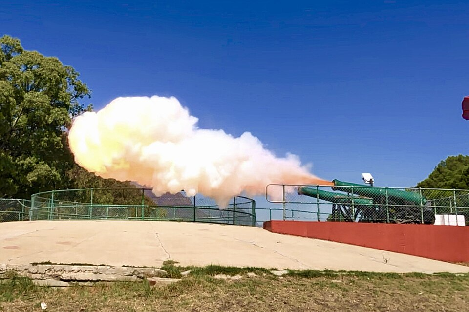

Welcome
South Africa is full of quirks most visitors walk straight past - a cannon fired daily by hand, a memorial built from bones found under a construction site, a coffee shop that looks like a steampunk workshop. This project catalogs the ones our group tracked down ourselves.
Search
Results
Details
Select an attraction above to view its details
Favourites
Compare
| Criteria | The Noon Gun | Truth Coffee HQ |
|---|---|---|
| Location | Signal Hill | Buitenkant Street, CBD |
| Established | 1806 | 2012 |
| Why it's hidden | Heard by everyone, seen by almost no one | Looks like an ordinary coffee shop from outside |